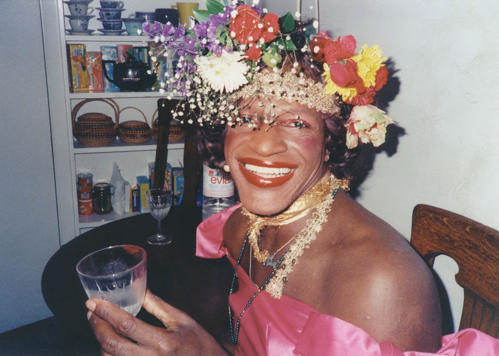

Call It A Tribute
While situated in the midst of a global health pandemic due to COVID-19, with no photography work for three months and counting, I've started learning some JavaScript-- and HTML, CSS, Python, and about cybersecurity, ethical hacking... and on and on. One of my first assignments in one of these courses was to create a "tribute" page, to test some basic skills.
But then we hit June and entered Pride month after almost a week of ongoing protests and demonstrations against police brutality in the wake of the killing of
George Floyd on May 25, 2020 in Minneapolis. There have since been protests in all 50 states. They are ongoing, in opposition to the systemic racism and
brutality in policing, and the
structural racism in the U.S. in general. Photography, "tribute" page assignments, and Pride month itself, seemed trivial in light of what our country is finally talking about right now. I'm writing this sandwiched between the anniversaries of the Tulsa Race Massacre, the Pulse nightclub shooting, Juneteenth and the Stonewall Riots. What could I possibly do to help keep this past, and present, from infecting our future? I'm still not sure, but continuing to educate myself on how we got here, and what's happening now, can only help in leading me to a few ideas.
So, this is my attempt at a tribute. (And organizing my thoughts. Hope some other white friends find this helpful too.)
Here's to Marsha P. Johnson, (Aug 24, 1945 - July 6, 1992) a black, trans activist for the LGBT community.

Photo credit: Netflix
Johnson moved to New York City from Elizabeth, NJ after graduating high school in 1963. By 1966, she was living in Greenwich Village, adopting the name Black Marsha, and eventually Marsha P. Johnson. Johnson variably identified as gay, a transvestite, and a drag queen, and said the "P" in her name stood for "pay it no mind," especially when referring to her gender. She performed with famous drag groups throughout her life, including the Hot Peaches and Angels of Light. She also struggled immensely, and had long stretches of living on the streets and engaging in survival sex work. She was arrested more than 100 times in connection to it, and also battled mental illness. Shortly after the 1992 pride parade, Johnson's body was found in the Hudson River. She was dead at 46. Police initially ruled the death a suicide, but friends and community members questioned her injuries and the rush to close the case. The case was reopened in 2012, and her cause of death is currently listed as
undetermined.
Johnson's organized activism could be said to have started in the early morning hours of June 28, 1969. She arrived to Christopher Street shortly after police raided the gay bar,
the Stonewall Inn, and attempted to arrest several patrons and employees, and some refused to provide their identification or get into police cars. Many were fed up with the monthly raids, and mistreatment by police, that had escalated in frequency in the weeks prior. It's said that night, one woman complained her handcuffs were too tight, and was hit in the head with a baton by police. This sparked a spontaneous rebellion in the crowd that had gathered. The street had filled with not only the patrons police had forced out of Stonewall, but many other gay people from the neighborhood.
For about a week afterwards, clashes with police and several demonstrations and marches happened in the area. Johnson, and some of her friends, including
Silvia Rivera, were said to be vanguards of the growing movement. On the first year anniversary of the raid, Johnson participated in the Christopher Street Liberation Pride rally, now thought of as the first pride celebration. Johnson joined the Gay Liberation Front, and later, her and Rivera formed the Street Transvestites Actual Revolutionaries organization to aid and house gay and trans street youth. In the 80s, Johnson continued to be an outspoken advocate for the gay community with her involvement in ACT UP, working to improve the lives of those living with AIDS.
"The first Pride was a riot" is a phrase I've been seeing a lot recently. This refers to Johnson, and Stonewall. It's meant to recognize that active, vocal resistance, that spilled out onto the streets, leaving damage to person and property, in response to violence and mistreatment finally cracked open the door for change.
While the LGBT community and the Black community's struggles are not one and the same, or comparable in substance, I can't help but think of Marsha now, during these current protests. A Black trans woman helped kick off one of the most successful movements for the rights of LGBT people and changed the entire conversation. But we didn't really hear her. We didn't push as hard for the rights of Black trans people,
like Marsha. At the time, the white men who were the main patrons of Stonewall and the neighboring gay bars, weren't sure they wanted the voices and representatives of the movement to be the Black trans women, Black lesbian bouncer (
Stormé DeLarverie) or other
BIPOC, so stories of these nights are still conflicting. (
Who Threw the First Brick?) We can use examples of our past for how to be allies, and how to listen to and support the Black Lives Matter movement going forward. We can take the lessons from Stonewall, and make sure we listen to the people who
are the movement, and follow.
I'm not going to write out my explanations for why protests are happening now (and desperately needed,
despite the consequences due to the pandemic) why it's
police, with support from the government, who are making the protests violent (property damage is not violence, assault is), and why "
abolishing the police" isn't that radical of an idea, even if you think the phrasing is. But I've collected some links throughout this post, and additional ones below, to those that have explained it quite well.
I've also made the choice to not link to any videos of murder or assault out of respect for the privacy of those harmed and their families. They can also be traumatizing for anyone to see. The videos exist, and are important to how we got here in the first place, but you can decide if you feel the need to watch them again.
WATCH:
- "13TH" (Netflix)
- Netflix has a Black Lives Matter section right now to make it really easy to find. I also recommend "When They See Us," "The Hate U Give" and "I Am Not Your Negro" (this one is only on Amazon or Kanopy)
- "The Death and Life of Marsha P. Johnson" (Netflix)
- "Circus of Books" (Netflix)
- "Paris Is Burning" (YouTube)
- and after "Paris Is Burning," watch "Kiki" (free with Hulu, or rent on Amazon Prime)
LISTEN:
SUBSCRIBE:
DONATE:
BUY:
- Find a brewery near you supporting the Black Is Beautiful beer initiative. They will donate 100% of the funds raised from the beer sales to local organizations supporting equality, inclusion, and police reform. Some of my local favorites like Mumford, Angel City, and Black-owned brewery Crowns and Hops are participating.
- For wine check out The McBride Sisters or for some unfiltered, zero-additive, responsibly farmed goodness, Zafa.
- Buy a print, for a good cause.
READ:
- From early May: America's Racial Contract
- Additional lists of books, films, podcasts, and places to donate and support:
- If you've gone through a lot of this, and still are saying things like, "Why protests? Who's doing the looting? I'm not racist, so what can I really do anyway?"
- Or just sit with this: BabyNames.com